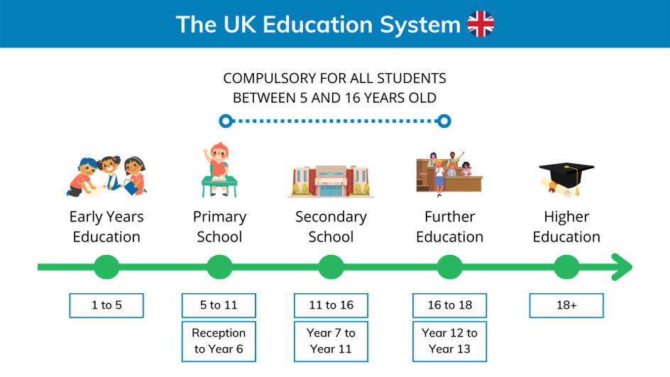
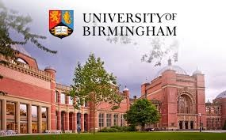
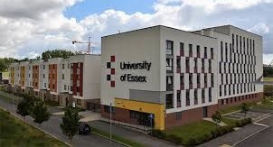

Lecture 8
The British Educational System
The educational system in the UK is very similar to the educational systems in other European countries and yet very different. As in other European countries it offers free of charge compulsory full-time education up to the age of 16. The major difference between the education systems in the United Kingdom and many other countries is decentralisation. Although the overall approach to education is in the wide sense similar throughout the United Kingdom, the service is administered separately: the Government of the United Kingdom is responsible for education in England whilst the Scottish Government, the Welsh Government and the Northern Ireland Executive are responsible for Scotland, Wales and Northern Ireland respectively.
Certain attempts to unify the system have been made but it is still not united. New laws have been introduced to implement the Government’s education reforms, the most significant of which are the Education Reform Act 1988, which led to introduction of a compulsory National Curriculum for pupils aged 5–16 in state schools, the Further and Higher Education Act of 1992 and Education Acts of 1993 and 1994.
The National Curriculum determines the content of what will be taught, and sets attainment targets for learning. It also determines how performance will be assessed and reported. The National Curriculum ensures that schools in all parts of the country are following the same courses; specifies what children must study and what they are expected to know at different ages; prepares children for the opportunities, responsibilities and experiences in adult life.
There are really three, not one, national curricula. There is one for England and Wales, another for Scotland and another for Northern Ireland. The organization of subjects and the details of the learning objectives vary slightly from one to the other. There is even a difference between England and Wales. Only in the latter the Welsh language is part of the curriculum.
In each country there are five stages of education: preschool, primary, secondary, further and higher education.
Compulsory Education
Full time education is compulsory for all children between the ages of 5 (4 in Northern Ireland) and 18, either at school or otherwise. Children between the ages of 3 and 5 are entitled to 600 hours a year of optional, state-funded, pre-school education which can be provided in “playgroups”, nurseries, community childcare centres or nursery classes in schools.
The age at which a student may choose to stop education is commonly known as the “leaving age” for compulsory education. This age was raised to 18 by the Education and Skills Act of 2008. The change took effect in 2013 for 16-year-olds and 2015 for 17-year-olds. Since that time the school leaving age (which remains 16) and the education leaving age (which is now 18) have been separated.
All children must receive an effective education from the first “prescribed day”, which falls on or after their 5th birthday until their 18th birthday, and must remain in school until the last Friday in June of the school year in which they turn 16. At this age pupils can make their choice: they may either leave school and go to a Further Education College or continue their education in the sixth form. Those who stay at school after GCSE, study for 2 more years for “A (Advanced) Level” Exams in three or four subjects which are necessary to get a place at one of British universities.
Schools usually divide their year into three ‘terms’, three months each, named after seasons: autumn term, winter term and spring term. The autumn term starts on the first Tuesday morning in September. In July schools break up for eight weeks.
Stages of Education
The state-funded education system is divided into stages based upon age: Early Years Foundation Stage (ages 3 to 5), primary education (ages 5 to 11) subdivided into Key Stage 1 (KS1) Infants (ages 5 to 7) and Key Stage 2 (KS2) Juniors (ages 7 to 11); secondary education (ages 11 to 16) subdivided into Key Stage 4 (KS4, ages 14 to 16); Key Stage 5 is post-16 education (ages 16 to 18) and tertiary education (for ages 18+).
In England children between the ages 3 and 4 can attend nurseries (Foundation Stage 1), but it is non-compulsory education. Foundation Stage 2 takes place in the reception class of an infant or primary school between the ages 4 and 5, which is compulsory. It is also known as Key Stage 0 to fit in alongside key stages 1 to 4. In Northern Ireland it is also used to refer to the first two years of compulsory education for pupils aged 4 to 6.
The introduction of a Foundation Stage is a significant landmark in education. The early years are given a distinct identity, and a more detailed, focused curriculum, where the emphasis is on learning through planned play activities, both indoors and outdoors, when children can explore, develop and represent learning experiences that help them make sense of the world, practice and build up ideas, cooperate as they talk, take risks and make mistakes, think creatively, communicate with others as they investigate or solve problems.
The curriculum is organised into the following six areas of learning: personal, social and emotional development; communication, language and literacy; mathematical development; knowledge and understanding of the world; physical development and creative development which help practitioners to plan the learning environment and the activities with children.
The stages of the state education in England, Wales and Northern Ireland are as follows:
| K. S. | Ages | Duration | School years | Final exam |
|---|---|---|---|---|
| 0 | 3–5 | 2 y. (1 c.) |
Nursery and reception | |
| 1 | 5–7 | 2 years | Phonics and Reading Check (taken in Year 1 but may be retaken, if failed, in Year 2) | |
| 2 | 7–11 | 4 years | 3–6 | SATs, 11+exam (generally only for grammar school entry) |
| 3 | 11–14 | 3 years | 7–9 | |
| 4 | 14–16 | 2 years | 10–11 | GCSEs |
| 5 | 16–18 | 2 years | 12–13 | GCE A-levels |
Key Stage 1 fits broadly with the first stage of primary education often known as infant schools. All pupils must follow a programme of education in the six areas of learning: Language and Literacy, Mathematics and Numeracy, the Arts, the World around us, Personal Development and Mutual Understanding and Physical Education. At the end of this stage, pupils Year 2 (aged 7 or almost 7) are normally assessed in national tests (and teacher assessments) in English, maths and science. The tests, carried out by the teacher during May, cover English reading; English grammar, punctuation and spelling; and maths.
Key Stage 2 fits the second stage of primary education, known as junior schools. Pupils join in Year 3, and stay at the school for four years, leaving at the end of Year 6 when most pupils are aged 11. All pupils in this Key Stage must follow a programme of education in these 12 areas: English, Mathematics, Science, Design and Technology, History, Geography, Art and Design, Music, Physical education (PE) including swimming, Computing, Modern Foreign Languages and Religious Education. Optionally at this Key Stage, schools often teach Personal, Social and Health education and/or citizenship.
At the end of this stage pupils are tested as part of the national programme of National Curriculum Tests known as standard attainment tests (SATs). These tests cover English and Mathematics which are externally marked, with results for each school being published in Department for Education performance tables.
Secondary education is split between Key Stage 3 and Key Stage 4.
Key Stage 3 is defined in the Education Act of 2002 as “the period beginning at the same time as the school year in which the majority of pupils in his class attain the age of twelve and ending at the same time as the school year in which the majority of pupils in his class attain the age of fourteen”. This Key Stage normally covers pupils during their first three years of secondary education. All pupils in this Key Stage must follow a programme of education in at least 15 areas: English, Mathematics, Science, Computing, Design and Technology, History, Geography, Modern Foreign Language, Art and Design, Music, Physical Education, Citizenship, Sex Education, Career Education, Welsh (in Wales only). In Northern Ireland all pupils in this Key Stage must follow a programme of education in the nine areas of learning in the curriculum, some of which include specific subject strands: Language and Literacy (English, Irish in Irish-speaking schools, Media Education), Mathematics and Numeracy (Mathematics, Financial Capability), Modern Languages, the Arts (Art and Design, Music, Drama), Environment and Society (History, Geography), Science and Technology (Science, Technology and Design), Learning for Life and Work (Employability, Local and Global Citizenship, Personal Development, Home Economics), Physical Education, Religious Education. At the end of this stage, pupils’ progress is estimated on the basis of on-going teacher assessment, with results for each school being published in performance tables.
Key Stage 4 is defined in the Education Act of 2002 as “the period beginning at the same time as the school year in which the majority of pupils in his class attain the age of fifteen and ending at the same time as the school year in which the majority of pupils in his class cease to be of compulsory school age”. Since that Act, the ending of compulsory education in England has been extended beyond the age of sixteen, but compulsory education beyond the age of 16 is not classed as part of Key Stage 4. All pupils in this Key Stage must follow a programme of education in the following areas: English, Mathematics, Science, Information and Communication Technology (England only), Physical Education, Citizenship, Careers Education, Religious Education, Work-related learning, Welsh (Wales only). In addition, there is a statutory duty on schools to provide an optional programme of education for pupils in this Key Stage in each of the following areas: the Arts, Design and Technology, the Humanities and Healthcare, Modern Foreign Languages. In Northern Ireland this Key Stage follows a programme of education in the nine areas of learning: Language and Literacy, Mathematics and Numeracy, Modern Languages, the Arts, Environment and Society, Science and Technology, Learning for Life and Work (Employability, Local and Global Citizenship, Personal Development), Physical Education, Religious Education. At the end of this stage, pupils aged 16 normally enter for a range of external examinations known as GCSE (General Certificate of Secondary Education) examinations, which mark the end of compulsory education in school. Students are free to choose the number (from five to ten) and the kinds of subjects taken.
The Sixth-Form Education
Key Stage 5 or Post-16 Education or Further Education is for students planning to go to college or university. There is a wide network of further education institutions in the UK. They give students the chance to increase their theoretical background and professional training. Further education includes sixth-form colleges and classes where students work for “A” (Advanced) level exams. It also includes colleges of further education which provide a theoretical background and professional qualification training in nursing, accountancy, management, art, music, etc.
Most students over 16 typically study in the sixth form of a school, in separate sixth form college or in a Further Education College. The term survives from an earlier system when the first five years of English secondary schooling were known as forms. Pupils started their first year of secondary school in the first form or first year, and this was the academic year in which pupils would normally become 12 years of age. Pupils would move up a form each year before entering the fifth form in the academic year in which they would have their sixteenth birthday. Those who stayed on at school to study for A-levels moved up into the sixth form.
The system was changed for the 1990–1991 academic year and school years are now numbered consecutively from primary school onwards. Year 1 is the first year of primary school after Reception. The first year of secondary school (the old first form) is now known as Year 7. The Sixth form starts now from Year 12. However, the term “sixth form” has still been retained as a vestige of the old system and is used as a collective term for Years 12 and 13.
Sixth form education is not compulsory in England and Wales. Students who take GCE A-levels choose their subjects of interest and the number of examinations. Normally, students take 3-4 A-Levels in their first year of the sixth form and most cut back to 3 in their second year, because university offers are normally based on 3 A-Levels. A-Levels have no specific subject requirements, so students have the opportunity to combine any subjects they wish to take. However, students normally pick their courses based on the degree they wish to pursue at university: most degrees require specific A Levels for entry.
Secondary vocational education is also known as further education. It is separate from secondary education and doesn’t belong to the category of higher education. While getting vocational oriented education students prepare themselves for the Vocational Certificate of Education (VCE), which is similar to the A-levels requires 1 and 2 years of full-time study.
Students who are interested in other vocational qualifications may pursue a Foundation degree which is a qualification that trains people to be highly skilled technicians. The National Apprenticeship Service also offers vocational education where people at ages of 16 and older enter apprenticeship in order to learn a skilled trade. Over 60 different certifications can be obtained through an apprenticeship, which typically lasts from 1 to 3 years. Trades apprentices receive paid wages during training and spend one day at school and the rest in the workplace to hone their skills.
State-Funded Schools
The terminology to do with the school system in Britain can be confusing. Schools funded by the government, either directly or via local education authorities, are called ‘state schools’ and education provided in this way is known as ‘state education’. This distinguishes it from ‘private education’, which comprises ‘independent schools’.
Some 93 % of children between the ages of 3 and 18 are in education in state-funded schools without charge (other than for activities such as swimming, theatre visits and field trips for which a voluntary payment can be requested.
Since 1998, there have been six main types of maintained (state-funded) school in England:
Academy schools established by the 1997–2010 Labour Government in areas of high social and economic deprivation. These schools are administratively free from direct local authority control and monitored by the Department for Education.
Community schools (formerly called county schools), in which the local authority employs the schools’ staff, owns the schools’ lands and buildings, and has primary responsibility for admissions.
Free schools are newly established schools in England set up by parents, teachers, charities or businesses which are funded by taxpayers. They are academically non-selective and free to attend, and are not controlled by a local authority. They are ultimately accountable to the Secretary of State for Education. Free schools are an extension of the existing Academy Programme. The first 24 free schools were opened in autumn 2011.
Foundation schools in which the governing body employs the staff and has primary responsibility for admissions. School land and buildings are owned by the governing body or by a charitable foundation. The Foundation appoints a minority of governors. Many of these schools were formerly grant-maintained schools.
Voluntary aided schools are linked to a variety of organisations. They can be faith schools (about two thirds are Church of England-affiliated; one third is sponsored by Roman Catholic Church), or non-denominational schools. The charitable foundation appoints a majority of the school governors and the governing body employs the staff and has primary responsibility for admissions.
Voluntary controlled schools are almost always faith schools with lands and buildings often owned by a charitable foundation. However, the local authority employs the schools’ staff and has primary responsibility for admissions.
University technical colleges (UTCs), established in 2010, are a type of secondary school in England that are led by a sponsor university and have close ties to local business and industry. They are funded by the taxpayer, and are non-selective, free to attend and not controlled by a local authority. The university and industry partners support the curriculum development of the UTC, provide professional development opportunities for teachers, and guide suitably qualified students to industrial apprenticeships, foundation degrees or full degrees. The sponsor university appoints the majority of the UTC’s governors and key members of the staff. Pupils transfer to a UTC at the age of 14. The distinctive element of UTCs is that they offer technically-oriented courses of study, combining National Curriculum requirements with technical and vocational elements. UTCs must specialise in subjects that require technical and modern equipment, but they also all teach business skills and the use of information and communication technology. UTCs are also supposed to offer clear routes into higher education or further learning in work.
English state-funded primary schools are almost all local schools with a small catchment area. More than half are owned by the Local Authority, though many are (nominally) voluntary controlled and some are voluntary aided. Some schools just include infants (aged 4 to 7) and some just juniors (aged 7 to 11). Some are linked, with automatic progression from the infant school to the junior school, and some are not. A few areas still have first schools for ages around 4 to 8 and middle schools for ages 8 or 9 to 12 or 13.
English secondary schools are mostly comprehensive (i. e. no entry exam), although the intake of comprehensive schools can vary widely, especially in urban areas with several local schools. Nearly 90 % of state-funded secondary schools are specialist schools, receiving extra funding to develop one or more subjects in which the school specialises, which can select up to 10 % of their pupils. In a few areas children can enter a grammar school if they pass the 11+exam; there are also a number of isolated fully selective grammar schools and a few dozen partially selective schools. A significant minority of state-funded schools are faith schools, which are attached to religious groups, most often the Church of England or the Roman Catholic Church.
All state-funded schools are regularly inspected by the Office for Standards in Education, often known simply as Ofsted. Ofsted publishes reports on the quality of education at a particular school on a regular basis. Schools judged by Ofsted to be providing an inadequate standard of education may be subject to special measures, which could include replacing the governing body and senior staff.
Independent Schools
The UK also has a tradition of independent schools which are privately run, fee-charging and are attended by approximately 7 % of children. Some independent schools for 13–18-year-olds are known for historical reasons as “public schools” and for 8–13-year-olds as “prep schools”.
Independent schools range from small kindergartens to large day and boarding schools and from new experimental schools to ancient foundations. Independent schools receive no state funding.
Public schools were founded to give free education to clever boys whose parents could not afford to educate them privately. They were under “public” management and control and were called “public schools” to distinguish them from small private schools run by individuals. Today, these schools are the most expensive of the independent schools in Britain. They are mostly boarding schools, where pupils live as well as study, though some of them also take some day-pupils. Normally, entrance is by examination and state schools do not prepare children for this. So, parents who wish to send their children to a public school often send them first to a preparatory school. Preparatory schools are small private primary schools which prepare children for school examinations.
Only a small proportion of children attend these schools and their influence permeates all the institutions that exercise power in the country. It is argued that parents must have the freedom to choose the education they want for their children, and pay for it if necessary. But in Britain today parents who buy a place in a private school are buying a ticket to success. Some schools offer scholarships for those with particular skills or aptitudes, or bursaries to allow students from less financially well-off families to attend.
All in all there are about 500 independent schools in the United Kingdom. Most of these schools are boarding ones, where children live as well as study. Education in such schools is very expensive. Most boarding public schools aim at developing in the pupils a sense of duty, obedience as well as ability to exercise authority. A school is divided into “houses” with selected older boys as prefects. These schools offer high quality facilities. The education is traditional. They have produced over the centuries many of Britain’s distinguished people.
Public schools have had a strong association with the ruling classes. Historically, the sons of officers and senior administrators of the British Empire were educated in England while their fathers were on overseas postings. It is interesting to mention that in 2010, over half of Cabinet Ministers had been educated at public schools, although most prime ministers since 1964 were educated at state schools.
Independent schools do not have to follow the National Curriculum, and their teachers are not required or regulated by law to have official teaching qualifications.
Famous Public Schools
Among the most famous British public schools are Eton, Harrow, Rugby and Winchester.
Eton College was founded in 1440 by King Henry VI as a charity school to provide free education to 70 poor boys, who would then go on to King’s College, Cambridge. Henry took Winchester College as his model, borrowing its statutes and removing its headmaster and some of the scholars to start his new school. Eton today is a larger school than it has been for much of its history with over 1,300 pupils.
Eton’s history and influence have made Eton one of the most prestigious schools in the world. Following the public school tradition, Eton is a full boarding school, which means pupils live at the school seven days a week. It is one of only four remaining single-sex boys’ boarding schools in the United Kingdom. Eton has educated 20 British prime ministers, a number of world leaders, Nobel laureates and generations of the aristocracy and has been referred to as “the chief nurse of England’s statesmen”. In 2019 Boris Johnson became the 20th British prime minister to have attended the school.
Eton charges up to £42,501 per year and was noted as being the sixth most expensive boarding school in the UK. However the school admits some boys with modest parental income. In 2014 some 263 pupils received significant financial help from the school of around 60 % of school fee assistance, whilst another 63 pupils received their education free of charge.
The curriculum, almost purely classical until the middle of the 19th century, consists predominantly of modern subjects, although students continue to study the classics. Correspondingly, the college facilities have been modernized and include science laboratories, language laboratories, and closed-circuit television systems.
The school year is divided into three academic terms known as halves: the Michaelmas Half (from early September to mid-December), the Lent Half (from mid-January to late March) and the Summer Half (from late April to late June or early July). They are called halves because the school year was once split into two halves, between which the boys went home.
The School is known for its traditions, including a uniform of black tailcoat and black waistcoat, a starched stiffed collar and black pinstriped trousers. Boys live in 25 boys’ houses, each headed by a housemaster, selected from the more senior members of the teaching staff.
The primary responsibility for a boy’s studies lies with his housemaster, but he is assisted by an additional director of studies, known as a tutor. Every evening, about an hour and a quarter, known as Quiet Hour, is set aside, during which boys are expected to study or prepare work for their teachers if not otherwise engaged.
At Eton, there are dozens of organisations known as ‘societies’, in many of which pupils come together to discuss a particular topic or to listen to a lecture, presided over by a senior pupil, and often including a guest speaker. Societies tend to come and go, depending on the special enthusiasms of the masters and boys in the school at the time, but some have been in existence for many years. At any one time there are about fifty societies and clubs in existence, catering for a wide range of interests and largely run by boys.
Sport is a feature of Eton; there is an extensive network of playing fields. The sport curriculum is dominated by football, cricket, tennis, rowing (The World of Eton. British Education).
Harrow School was founded in 1572 by John Lyon, a prosperous yeoman, under a charter granted by Elizabeth I. In 1591 Lyon drew up the statutes of the institution, providing for the free education of 40 boys of the Harrow parish, and left two-thirds of his fortune to the school when he died. The original course of instruction was exclusively classical, but studies are now offered in agriculture, architecture, art, classics, economics, geography, history, mathematics, modern languages, music, science, and technology.
The school has an enrolment of 829 boys all of whom board full-time, in twelve boarding houses of about seventy boys in each. Each house has its own facilities, customs and traditions, and each competes in sporting events against the others. Harrow has been instrumental in the development of a number of sports. The sport squash was invented in Harrow and spread to other schools and eventually became an international sport.
Its alumni include eight former British or Indian ministers, foreign politicians, former and current members of both houses of the UK Parliament, five kings, three Nobel Prize winners, many figures in the arts and sciences. Sir Winston Churchill graduated from the Harrow School (Harrow: A Very British Education).
Rugby School is a day and mostly boarding co-educational independent school in England. It was founded in 1567 as a free grammar school for boys of the area under the terms of the will of a wealthy London grocer. The most famous headmaster was the British educator Thomas Arnold who was in charge of the school from 1828 to 1842. He introduced a program of physical, moral, and religious discipline, designed to train the character as well as the mind of the student. Under his leadership Rugby became one of the greatest of English private schools. The School has been at the forefront of science education in Great Britain throughout the 20th century. The school also offers courses in art history, design, politics, and Russian history. Girls were first admitted in 1976 and in 1993 the school initiated programmes that would move it toward full co-education. The school is familiarly known also as the place of origin of Rugby football.
Today total enrolment of day pupils, from forms 4 to 12 numbers around 800. During the first year pupils study various subjects. In the second year they do nine subjects which are for their GCSEs. The school then provides standard A-levels in 29 subjects. Students at this stage have the choice of taking three or four subjects and are also offered the opportunity to take an extended project.
A number of notable people studied at Rugby School, among them Prime Minister Neville Chamberlain, author and mathematician Lewis Carroll, etc. (2018 November Rugby School Private Tour, Rugby, England).
Winchester College was founded in 1382 in conjunction with New College, Oxford, for which it was designed to act as a feeder. The first 70 poor scholars entered the school in 1394.
Winchester has its own entrance examination. Those wishing to enter make their arrangements with the relevant housemaster some two years before sitting the exam. Successful candidates may obtain, according to their performance, a scholarship.
The school offers a wide range of subjects. In 2008 it abandoned A-level on the grounds that this will strengthen the quality of the school's intellectual life and adopted the Cambridge Pre-U which is principally aimed at students aged 16-19, and has recognition for university entrance. In addition to normal lessons, all boys throughout the school are required to attend a class which focuses on parts of history, literature, and politics that do not lead to external examinations; its purpose is to ensure a broad education that does not focus solely on examinations.
Every pupil lives in a boarding house. It is here that he studies, eats and sleeps. Each house has an official name, usually based on the family name of the first housemaster.
As for sport traditions Winchester College has its own game, Winchester College football which is considered a cross between football and rugby (An Introduction to Winchester College).
British Universities
Higher education in Britain is traditionally associated with universities, though education of University standard is also given in other institutions such as colleges and institutes of higher education, which have the power to award their own degrees and provide both research-oriented and higher professional education. British higher education is highly valued around the globe for its quality and rigorous academic standards.
Britain is home to some of the world’s most prominent institutions of higher learning. British universities greatly differ from one another in date of foundation, size, history, tradition, general organization, methods of instruction and ways of student life. They are divided into several types.
The Old ones were founded before the 19thcentury, such as Oxford and Cambridge. Teaching in the city of Oxford is documented from 1096, making the University of Oxford the oldest university in the English-speaking world (Oxford University). The University of Cambridge was founded in 1209. These universities of Oxford and Cambridge, both founded in the medieval period, are federations of semi-independent colleges (Cambridge, England: Historic University Town). Before 1970 all Oxbridge colleges were single-sex (mostly for men). Now, the majority admit both sexes.
Central to academic life at Oxford and Cambridge is the tutorial, which is an hour-long meeting between one to three students and their tutor. A great advantage of the tutorial system is the individual attention that students receive. Although there may be one tutorial a week, students are required to spend many hours independently preparing for it and must come to the tutorial fully ready. Undergraduates are usually expected to present an essay, solutions to a set of problems, or some other project. The tutor’s role is to assess this work and, through discussion, help undergraduates to think critically and creatively about their chosen subject. This personal tuition enables students to explore course material in much greater depth than lectures allow and to clarify anything students are not clear about.
The Universities of Oxford and Cambridge (or Oxbridge, as they are jointly called) have produced a large number of the world’s most prominent scientists, writers and politicians, including Charles Darwin, Isaac Newton, Oscar Wilde, Margaret Thatcher, Indira Gandhi, Bill Clinton and many others.
Three Scottish universities – St. Andrews, Glasgow and Aberdeen – were founded in the 15th century and a fourth, the University of Edinburgh was established by royal charter in 1583. Now there are fifteen universities in Scotland and three other institutions of higher education that have the authority to award academic degrees. All Scottish universities are funded by the Scottish Government. Approximately 231,000 students study at universities or institutes of higher education in Scotland, All Scottish universities have the power to award degrees at all levels: undergraduate, taught postgraduate, and doctoral. Students do not pay for their first undergraduate degree, but all students are required to pay tuition fees for postgraduate education (e. g. MS, PhD).
The Redbrick universities were founded in the 19th or 20th century. Durham University was founded in 1832 and the University of London started in 1836 with just two colleges established. Many more have joined since, scattered widely around the city, so that each college (most are non-residential) is almost a separate university. During the 19th century various institutes of higher education, usually with a technical bias, sprang up in the new industrial towns and cities such as Birmingham, Manchester and Leeds. Their buildings were of local material, often brick, in contrast to the stone of older universities (hence the name, ‘redbrick’). At first they catered only for local people and prepared students for London University degrees, but later they were given the right to award their own degrees, and so became universities themselves. In the mid-twentieth century they started to accept students from all over the country. These universities were created to fill local needs; the emphasis was placed on the study of science and technology. Currently they offer a full range of courses.
The Whitebrick universities (later named “plate-glass”) were founded in the 1960s as a direct response to the demands of an expanding population and the needs of an increasingly technological economy. Most of them took the names of the counties where they were located: East Anglia, Essex, Kent, Lancaster, Warwick, York, etc.
Significant expansion followed in 1992 when, by means of the Further and Higher Education Act, the UK government granted university status to former polytechnics and to a number of other institutions, principally colleges of higher and further education. Collectively these universities are referred to as ‘post-92’. These new institutions nearly doubled the number of universities in the UK.
All in all higher education in the UK is now provided by 166 institutions having their own degree awarding powers. The majority of these also have ‘university’ title, which is only granted to those institutions which meet certain criteria. There are over 700 colleges and other institutions in the UK which do not have degree awarding powers but which provide complete courses leading to recognized UK degrees.
Getting University Degrees
Higher education in the UK is highly selective; i. e. entrance to British universities is via a strict selection process and an interview. Applications for first degree courses are usually made through the Universities and Colleges Admission Service (UCAS). After the interview a potential student is offered a place on the basis of GCE A-level exam results. If the student does not get the grades specified in the offer, a place cannot be taken up. Some universities, such as Oxford and Cambridge, have an entrance exam before the interview stage. This kind of selection procedure means that not everyone in Britain with A-level qualifications will be offered the chance of a university education. Good А-level results in at least two subjects are necessary to get а place at university.
Grants and loans are intended to create opportunities for equality in education. A grants system was set up to support students through university. Grants are paid by the local education authority (LEA) on the basis of parental income. Students are able to borrow money in the form of a low-interest loan, which then has to be paid back after their course is finished.
The academic year in Britain’s universities, Polytechnics, Colleges of Education is divided into three terms, from eight to ten weeks each, which usually run from the beginning of October to the middle of December, from the middle of January to the end of March, and from the middle of April to the end of June or the beginning of July. The terms are crowded with activity and the vacations between the terms – a month at Christmas, a month at Easter, and three or four months in summer – are mainly periods of intellectual digestion and private study.
The main teaching and assessment methods in British universities are: lectures, laboratory practicals, seminars, tutorials, e-learning, projects and examinations. Teaching methods are decided by the individual teacher, department, faculty or institution, or a combination of these. Most courses involve both formal lectures and less formal seminars, in which students are encouraged to participate and lead discussions. Certain courses require practical sessions such as work in a laboratory for science subjects and oral classes for foreign languages. Examinations are not necessarily taken annually. University education may be not only full-time but also part-time.
Higher educational institutions in the UK are autonomous, they design and develop their own programmes of study, each is primarily responsible for maintaining the quality of the education it provides, and the standards of the qualifications it offers. However, the funding bodies have a statutory obligation to ensure that the higher education they fund is of good quality.
Research is an important feature of university work. British research is of world-class quality and the UK universities and research institutes have produced 44 Nobel Prize winners in the last 50 years; there have been 69 UK-born Nobel laureates in the categories of chemistry, physics and medicine since 1901, more than from any country except the United States.
Students studying for the first degree are called undergraduates. First degree courses, commonly known as Bachelor’s degrees, typically take three years to complete in England, Wales and Northern Ireland, and four years at a Scottish university. Courses which include a period of practical work outside the institution normally take four years. Certain specialist courses and some vocational or professional degree courses may take longer. For example, medicine and dentistry can take up to six years (not including further specialist training) and architecture up to seven years. Those engaged in the study of such subjects as history, languages, economics or law take Bachelor of Arts (BA). Students studying pure or applied sciences such as medicine, dentistry, technology or agriculture get Bachelor of Science (BS). When they have been awarded the degree, they are known as graduates.
Students who obtain their Bachelor’s degree can apply to take a further degree course, usually involving a mixture of exam courses and research. There are two different types of post-graduate courses – the Master’s Degree (MA or MS), which takes one year for a taught degree and two years for a research-based degree, and the higher degree of Doctor of Philosophy (PhD), which takes two or three years of more-or-less full-time study. The degree of Doctor of Philosophy is awarded for the creation and interpretation of new knowledge, or application of existing knowledge in a new way, at the forefront of an academic discipline (e. g. in arts, social sciences, business, humanities or science subjects), usually through original research.
There are also a number of vocational ‘sub-degree’ qualifications offered in the UK, including the Higher National Diploma (HND), the Higher National Certificate (HNC) and the Diploma in Higher Education (Dip HE), which generally take one or two years to complete.
Funding for post-graduate courses is very limited, and even students with first class degrees may be unable to get a grant. Consequently many post-graduates have heavy bank loans or are working to pay their way to a higher degree. The degrees are awarded at public degree ceremonies. Oxford and Cambridge cling to their traditions, such as the use of Latin at degree ceremonies.
One development in education in which Britain can claim to lead the world is the Open University. It was founded by the Labour government under Prime Minister Harold Wilson in 1969 in Milton Keynes, Buckinghamshire and is so called because it is open to all – this university does not require any formal academic qualifications to study for a degree, and many people who do not have an opportunity to be ‘ordinary’ students enrol. The Open University is a world leader in modern distance learning. It enables people to study at times and in places to suit them. Information and communication technology plays a big part in the Open University study. Students are provided with interactive teaching and multimedia materials. Tutors offer support to students by e-mail and computer conferencing. There are, however, short summer courses of about a week that the students have to attend and special part-time study centres where they can meet their tutors when they have problems.
British higher education is increasingly understood to be a major facet of the UK’s international profile and a major source of export earnings. Higher education is now highly internationalised: 24 % of university staff and 17 % of students are international. The UK remains the second most popular destination for students from foreign countries.
Test Your Knowledge
- Why is the introduction of the National Curriculum of great importance?
- When did elementary education become compulsory and free of charge?
- What two groups of schools are all schools in the UK divided into?
- What is the public school system valued for?
- When were public schools founded and why were they called “public”?
- What public schools are the most famous?
- When was Eton founded?
- What traditions are observed in Eton?
- What famous people were taught at Rugby School?
- What are the chief elements of the National Curriculum?
- What is co-educational education?
- What are the key stages of school education?
- How is children’s progress at different key stages of school education assessed?
- What are children taught in infant and junior schools?
- What kinds of schools are there in Great Britain according to the funding?
- What certificate do children get on finishing school at the age of 16?
- How many exams do children take at the end of the sixth form?
- How are school-leavers admitted to universities in the UK?
- What are the oldest universities in England? Does anything distinguish them?
- What is a tutorial system?
- How does the Open University work?
- What are undergraduates awarded on the completion of higher education?
- What degrees are awarded at the post-graduate level?